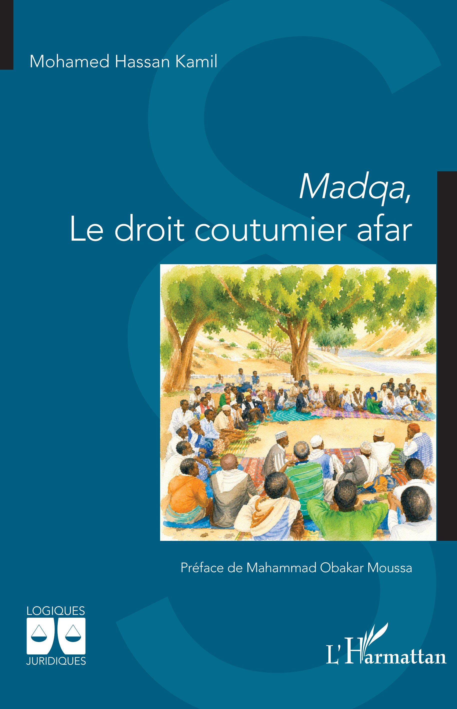

Le Madqa
Un héritage de justice et de sagesse afar
Au cœur de la société afar se trouve un héritage précieux : le Madqa, un système de droit coutumier ancestral transmis oralement de génération en génération. Bien plus qu’un ensemble de règles, il représente une manière traditionnelle d’organiser la vie collective, de préserver l’équilibre entre les individus et de maintenir l’harmonie au sein des communautés.
Utilisé par le peuple afar, notamment à Djibouti, en Éthiopie et en Érythrée, le Madqa encadre de nombreux aspects de la vie sociale. Il intervient dans le règlement des conflits, les questions familiales, les litiges liés aux biens et aux terres, ainsi que dans les affaires les plus graves. Il accorde une place importante au dialogue, à la médiation, à la réparation du préjudice et à la réconciliation.
Lorsqu’un différend survient, les parties peuvent être entendues au cours d’assemblées traditionnelles, où les anciens et les notables jouent un rôle essentiel. À travers les échanges, les témoignages et la recherche d’un accord, l’objectif est de parvenir à une décision reconnue par la communauté et de rétablir la paix. Selon la nature de l’affaire, une compensation peut également être prévue.
Le Madqa n’est toutefois pas un système unique et uniforme. Il comprend cinq systèmes coutumiers, façonnés par l’histoire, l’organisation des clans et les réalités territoriales. L’illustration ci-contre présente leurs noms et les territoires auxquels ils sont associés.
Ainsi, le Madqa constitue bien davantage qu’un héritage juridique : il est le reflet d’une mémoire collective, d’une conception de la responsabilité et d’un savoir transmis au fil des siècles. Sa transmission contribue à préserver les traditions afar et à faire vivre un patrimoine culturel dans lequel la justice, les liens communautaires et la recherche de la paix occupent une place importante.
Pour approfondir vos connaissances
Le Madqa témoigne de la richesse du patrimoine juridique afar. Pour prolonger votre découverte, explorez ces ressources consacrées à son histoire, à ses règles et à sa transmission.
Découvrir Afar Culture ↗
Le Madqa : un patrimoine transmis par l’écrit
Longtemps transmis oralement par les Makaaban, les juges coutumiers, le Madqa fait désormais l’objet d’une codification écrite qui contribue à préserver et à transmettre ce savoir aux générations futures.
Madqa : Le droit coutumier afar
Un ouvrage de Mohamed Hassan Kamil, consacré au droit coutumier afar.
Un document complémentaire en ligne
Vous pouvez également consulter le document Droit coutumier afar, attribué à Saleh Mohamed Hassan, sur Academia.edu. Sa consultation ou l’accès au PDF dépendent des conditions proposées par la plateforme.
Consulter le document →